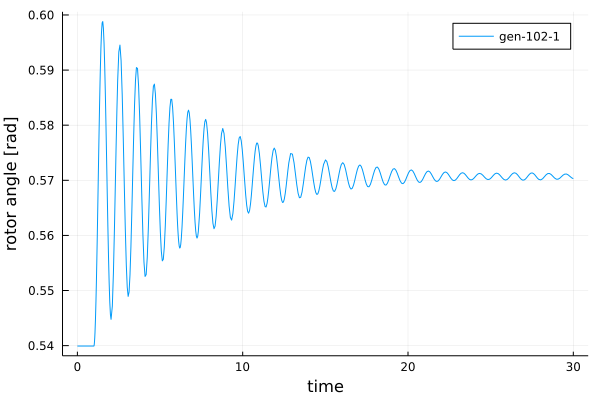
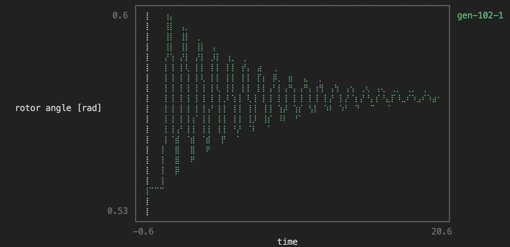

Quick Start Guide
You can access example data in the Power Systems Test Data Repository, the data can be downloaded with the PowerSystems.jl submodule UtilsData. Some systems are already provided in PowerSystemCaseBuilder.
Loading data
Data can be loaded from a pss/e raw file and a pss/e dyr file.
julia> using PowerSystems, PowerSimulationsDynamics, PowerSystemCaseBuilder, Sundials, Plots, Loggingjulia> logger = configure_logging(console_level = Logging.Error, file_level = Logging.Info)MultiLogger(Base.CoreLogging.AbstractLogger[Logging.ConsoleLogger(IOContext(Base.PipeEndpoint(RawFD(4294967295) closed, 0 bytes waiting)), Error, Logging.default_metafmt, true, 0, Dict{Any, Int64}()), InfrastructureSystems.ProgressLogger(TerminalLoggers.TerminalLogger(IOContext(Base.PipeEndpoint(RawFD(4294967295) closed, 0 bytes waiting)), LogLevel(-1), TerminalLoggers.default_metafmt, true, 0, false, 0, Dict{Any, Int64}(), TerminalLoggers.StickyMessages(IOContext(Base.PipeEndpoint(RawFD(4294967295) closed, 0 bytes waiting)), false, Pair{Any, String}[]), LeftChildRightSiblingTrees.Node{TerminalLoggers.ProgressBar}[], ReentrantLock(nothing, 0x00000000, 0x00, Base.GenericCondition{Base.Threads.SpinLock}(Base.InvasiveLinkedList{Task}(nothing, nothing), Base.Threads.SpinLock(0)), (1, 0, 0)))), InfrastructureSystems.FileLogger(Base.CoreLogging.SimpleLogger(IOStream(<file power-systems.log>), Info, Dict{Any, Int64}()))], nothing, Dict{Symbol, Base.CoreLogging.LogLevel}(), InfrastructureSystems.LogSuppressionTracker(Dict{Symbol, InfrastructureSystems.LogEventSuppressionStats}()))julia> omib_sys = PowerSystemCaseBuilder.build_system( PowerSystemCaseBuilder.PSSETestSystems, "psse_OMIB_sys", )┌ Info: Building new system psse_OMIB_sys from raw data └ sys_descriptor.raw_data = "/home/runner/.julia/packages/PowerSystemCaseBuilder/BYayC/data" [ Info: The PSS(R)E parser currently supports buses, loads, shunts, generators, branches, transformers, and dc lines [ Info: The PSS(R)E parser currently supports buses, loads, shunts, generators, branches, transformers, and dc lines [ Info: angmin and angmax values are 0, widening these values on branch 1 to +/- 60.0 deg. [ Info: angmin and angmax values are 0, widening these values on branch 2 to +/- 60.0 deg. [ Info: the voltage setpoint on generator 1 does not match the value at bus 101 [ Info: the voltage setpoint on generator 2 does not match the value at bus 102 ┌ Info: Constructing System from Power Models │ data["name"] = "omib" └ data["source_type"] = "pti" [ Info: Reading bus data [ Info: Reading generator data [ Info: Reading branch data [ Info: Reading branch data [ Info: Reading DC Line data [ Info: Reading storage data [ Info: Generators provided in .dyr, without a generator in .raw file will be skipped. ┌ Warning: struct DynamicGenerator does not exist in validation configuration file, validation skipped └ @ InfrastructureSystems ~/.julia/packages/InfrastructureSystems/vxA9a/src/validation.jl:51 [ Info: Machine at bus 101, id 1 has zero inertia. Modeling it as Voltage Source [ Info: Serialized System to /home/runner/.julia/packages/PowerSystemCaseBuilder/BYayC/data/serialized_system/ForecastOnly/psse_OMIB_sys.json System ┌───────────────────┬─────────────┐ │ Property │ Value │ ├───────────────────┼─────────────┤ │ System Units Base │ SYSTEM_BASE │ │ Base Power │ 100.0 │ │ Base Frequency │ 60.0 │ │ Num Components │ 11 │ └───────────────────┴─────────────┘ Static Components ┌─────────────────┬───────┬────────────────────────┬───────────────┐ │ Type │ Count │ Has Static Time Series │ Has Forecasts │ ├─────────────────┼───────┼────────────────────────┼───────────────┤ │ Arc │ 1 │ false │ false │ │ Area │ 1 │ false │ false │ │ Bus │ 2 │ false │ false │ │ Line │ 2 │ false │ false │ │ LoadZone │ 1 │ false │ false │ │ PowerLoad │ 1 │ false │ false │ │ Source │ 1 │ false │ false │ │ ThermalStandard │ 1 │ false │ false │ └─────────────────┴───────┴────────────────────────┴───────────────┘ Dynamic Components ┌────────────────────────────────────────────────────────────────────────┬────── │ Type │ Cou ⋯ ├────────────────────────────────────────────────────────────────────────┼────── │ DynamicGenerator{BaseMachine, SingleMass, AVRFixed, TGFixed, PSSFixed} │ 1 ⋯ └────────────────────────────────────────────────────────────────────────┴────── 1 column omitted
For more details about loading data and adding more dynamic components check the Creating a System with Dynamic devices section of the documentation in PowerSystems.jl.
Define the Simulation
julia> time_span = (0.0, 30.0)(0.0, 30.0)julia> perturbation_trip = BranchTrip(1.0, Line, "BUS 1-BUS 2-i_1")BranchTrip(1.0, Line, "BUS 1-BUS 2-i_1")julia> sim = Simulation!(ResidualModel, omib_sys, pwd(), time_span, perturbation_trip)[ Info: Unit System changed to UnitSystem.DEVICE_BASE = 1 Iter f(x) inf-norm Step 2-norm ------ -------------- -------------- Simulation Summary ┌─────────────────────────┬────────────────┐ │ Property │ Value │ ├─────────────────────────┼────────────────┤ │ Status │ BUILT │ │ Simulation Type │ Residual Model │ │ Initialized? │ Yes │ │ Multimachine system? │ No │ │ Time Span │ (0.0, 30.0) │ │ Number of States │ 6 │ │ Number of Perturbations │ 1 │ └─────────────────────────┴────────────────┘
Explore initial conditions for the simulation
julia> x0_init = read_initial_conditions(sim)Dict{String, Any} with 5 entries: "generator-102-1" => Dict(:ω=>1.0, :δ=>0.539921) "V_R" => Dict(102=>1.03973, 101=>1.05) "Vm" => Dict(102=>1.04, 101=>1.05) "θ" => Dict(102=>0.0228958, 101=>0.0) "V_I" => Dict(102=>0.0238095, 101=>0.0)
julia> show_states_initial_value(sim)Voltage Variables ==================== BUS 1 ==================== Vm 1.05 θ 0.0 ==================== BUS 2 ==================== Vm 1.04 θ 0.0229 ==================== ==================== Differential States generator-102-1 ==================== δ 0.5399 ω 1.0 ====================
Obtain small signal results for initial conditions
julia> small_sig = small_signal_analysis(sim)The system is small signal stable
Show eigenvalues for operating point
julia> small_sig.eigenvalues2-element Vector{ComplexF64}: -0.15883100381194404 - 6.978285992329905im -0.15883100381194404 + 6.978285992329905im
Show reduced jacobian for operating point
julia> small_sig.reduced_jacobian2×2 Matrix{Float64}: 0.0 376.991 -0.129238 -0.317662
Explore participation factors. In this case for state ω
julia> part_factors = small_sig.participation_factorsDict{String, Dict{Symbol, Array{Float64}}} with 1 entry: "generator-102-1" => Dict(:ω=>[0.5, 0.5], :δ=>[0.5, 0.5])julia> part_factors["generator-102-1"][:ω]2-element Vector{Float64}: 0.5 0.5
This means that the state ω of the generator at bus 102, participates 50% in eigenvalue 1 and 50% in eigenvalue 2.
Execute the simulation
julia> execute!(sim, IDA(), dtmax = 0.02, saveat = 0.02, enable_progress_bar = false)┌ Warning: Unrecognized keyword arguments found. Future versions will error. │ The only allowed keyword arguments to `solve` are: │ (:dense, :saveat, :save_idxs, :tstops, :tspan, :d_discontinuities, :save_everystep, :save_on, :save_start, :save_end, :initialize_save, :adaptive, :abstol, :reltol, :dt, :dtmax, :dtmin, :force_dtmin, :internalnorm, :controller, :gamma, :beta1, :beta2, :qmax, :qmin, :qsteady_min, :qsteady_max, :qoldinit, :failfactor, :calck, :alias_u0, :maxiters, :callback, :isoutofdomain, :unstable_check, :verbose, :merge_callbacks, :progress, :progress_steps, :progress_name, :progress_message, :timeseries_errors, :dense_errors, :weak_timeseries_errors, :weak_dense_errors, :calculate_error, :initializealg, :alg, :save_noise, :delta, :seed, :alg_hints, :kwargshandle, :trajectories, :batch_size, :sensealg, :advance_to_tstop, :stop_at_next_tstop, :default_set, :second_time, :prob_choice, :alias_jump) │ │ See https://diffeq.sciml.ai/stable/basics/common_solver_opts/ for more details. │ │ Set kwargshandle=KeywordArgError for an error message. │ Set kwargshandle=KeywordArgSilent to ignore this message. └ @ DiffEqBase ~/.julia/packages/DiffEqBase/iK5G7/src/solve.jl:858 Unrecognized keyword arguments: [:enable_progress_bar] SIMULATION_FINALIZED::BUILD_STATUS = 6
Make a plot of the results
julia> results = read_results(sim)Simulation Results Summary ┌────────────────────────────┬──────────────┐ │ Property │ Value │ ├────────────────────────────┼──────────────┤ │ System Base Power [MVA] │ 100.0 │ │ System Base Frequency [Hz] │ 60.0 │ │ Time Span │ (0.0, 30.0) │ │ Total Time Steps │ 1503 │ │ Number of States │ 6 │ │ Total solve time │ 31.400281056 │ └────────────────────────────┴──────────────┘julia> angle = get_state_series(results, ("generator-102-1", :δ));julia> plot(angle, xlabel = "time", ylabel = "rotor angle [rad]", label = "gen-102-1");

If you miss PSS/e's plotting aesthetics and want something that resembles that, you can use UnicodePlots.
julia> using UnicodePlotsjulia> unicodeplots()Plots.UnicodePlotsBackend()julia> plot(angle, xlabel = "time", ylabel = "rotor angle [rad]", label = "gen-102-1");
